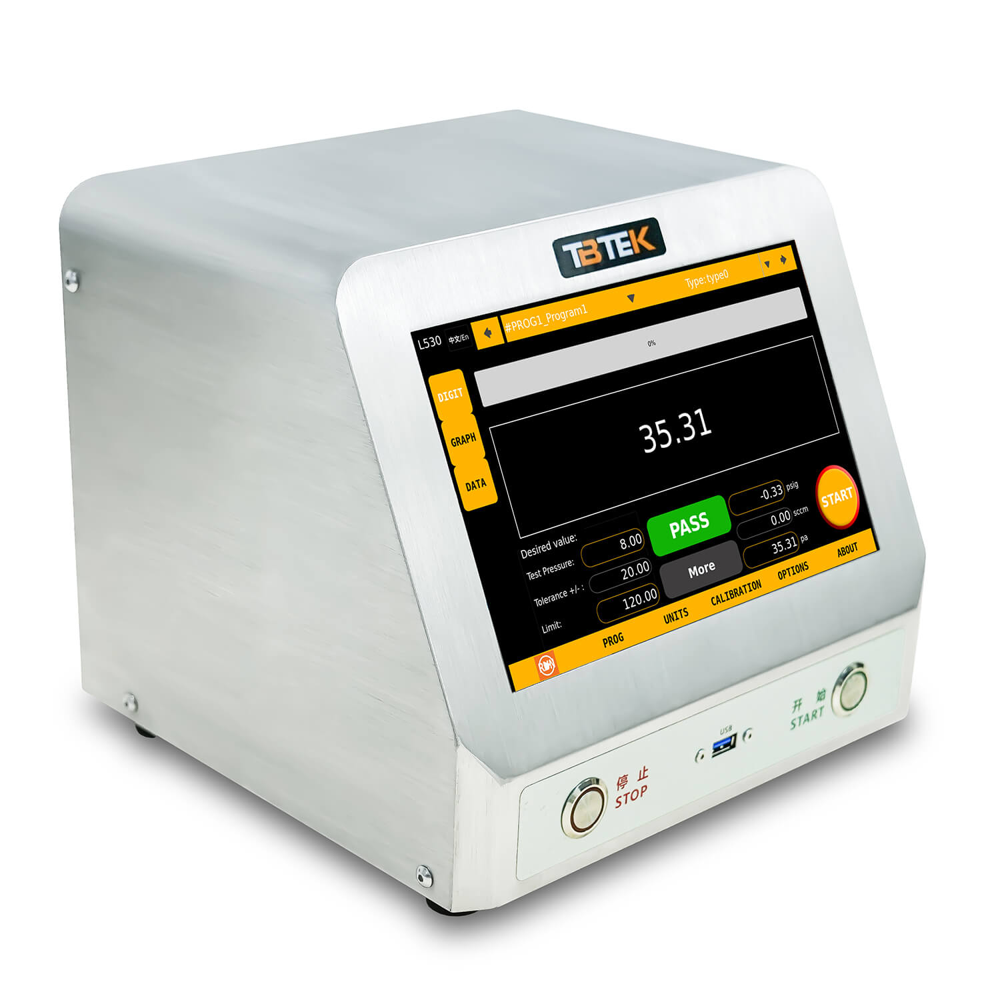
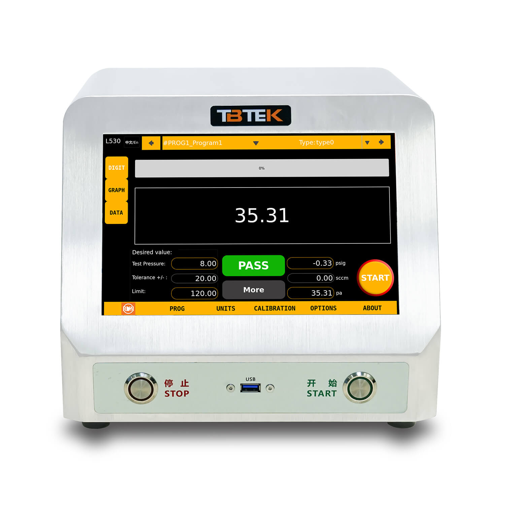
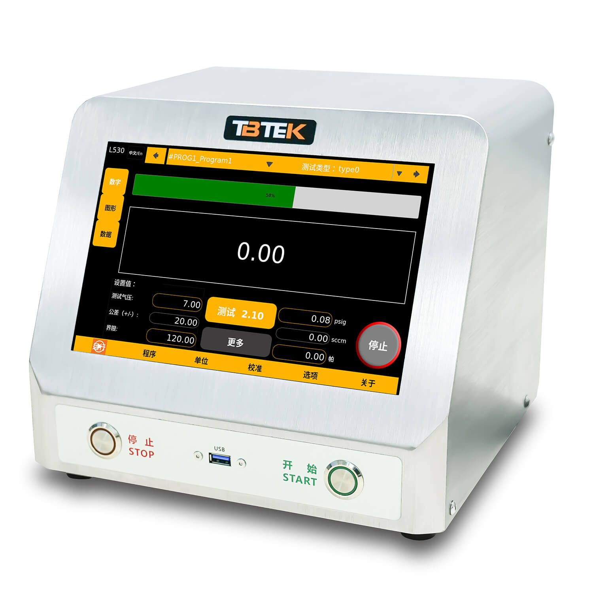
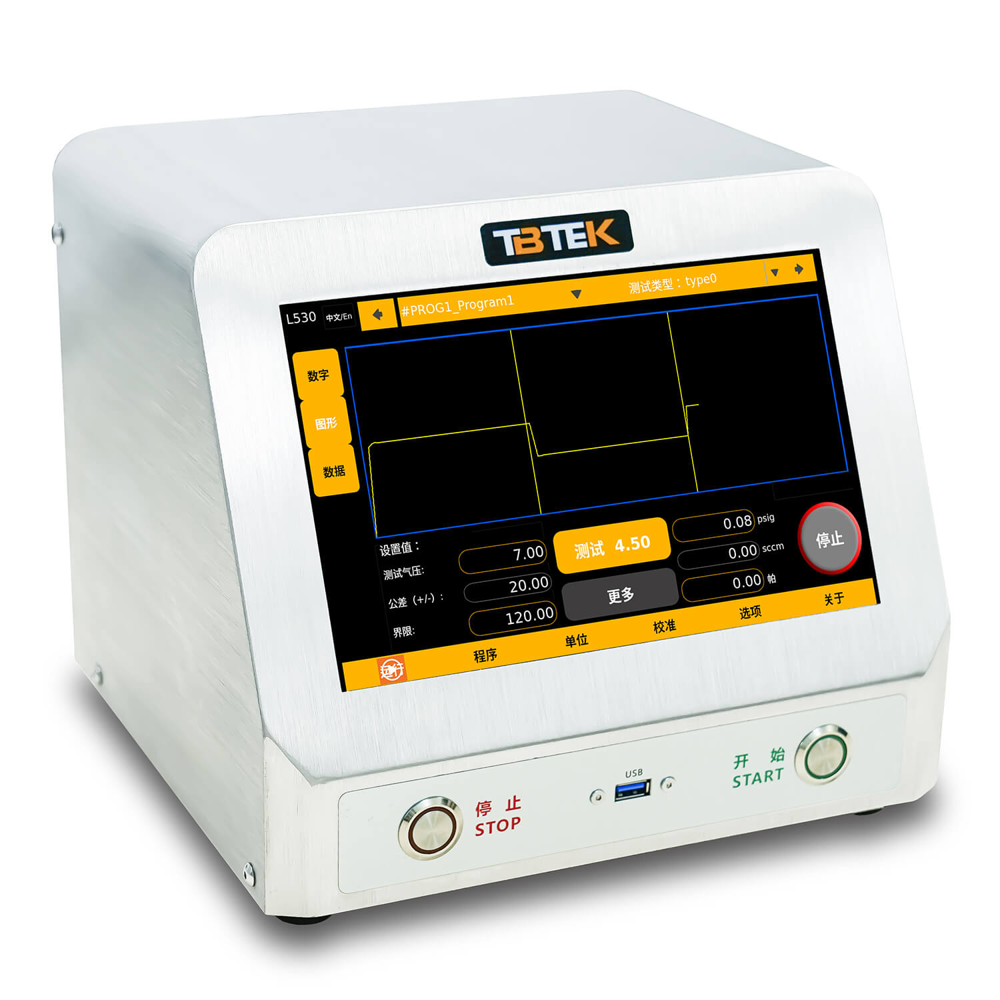

Method-based leak testing instruments for automotive, medical, HVAC-R, battery, and industrial production environments.
We keep the first overseas lineup simple: L3 for direct pressure testing, L5 for differential pressure testing, with manual or electronic regulation versions.

Single-channel differential pressure model with electronic pressure regulator. This is the main recommended configuration for standard overseas inquiries.

Single-channel differential pressure model with manual pressure regulation for teams that prefer simpler setup and lower automation level.

Single-channel direct pressure model with electronic pressure regulator for production teams that need controlled pressure setup.

Single-channel direct pressure model with manual pressure regulation for straightforward air-tightness testing tasks.
L5 means differential pressure. L3 means direct pressure. The last two digits show whether pressure regulation is electronic or manual.
For applications that need better resolution of small pressure differences. L530 uses electronic pressure regulation; L520 uses manual pressure regulation.
For straightforward air-tightness testing where direct pressure decay logic is suitable. L330 uses electronic pressure regulation; L320 uses manual pressure regulation.
L530 and L330 are the recommended electronic-regulator versions when repeatability, recipe switching, and production consistency matter.
Initial standard L530 models use 0.7 MPa, 0.35 MPa, and 0.1 MPa sensor ranges instead of too many options.
Most projects can be narrowed quickly by looking at leak target, test pressure, part volume, and cycle-time allowance.
Use L5 differential pressure when the application needs higher sensitivity. Use L3 direct pressure for simpler air-tightness checks.
Choose L530 or L330 for electronic pressure regulation. Choose L520 or L320 when manual pressure adjustment is acceptable.
For the first standard L530 models, choose L530-070, L530-035, or L530-010 according to the required test pressure range.
Tell us whether the tester will be used as a stand-alone instrument, bench setup, or integrated station with data and PLC communication.
| Model | Test Method | Pressure Regulation | Channel | Standard Sensor Range | Configuration | Main Fit | Notes |
|---|---|---|---|---|---|---|---|
| L530 | Differential pressure | Electronic pressure regulator | Single channel | 0.7 / 0.35 / 0.1 MPa | High-configuration pneumatic valve setup | Main recommended model | L530-070 / L530-035 / L530-010 |
| L520 | Differential pressure | Manual pressure regulator | Single channel | Confirm by project | High-configuration pneumatic valve setup | Differential model with simpler pressure setup | Quote after project review |
| L330 | Direct pressure | Electronic pressure regulator | Single channel | Confirm by project | High-configuration pneumatic valve setup | Direct pressure model with electronic control | Quote after project review |
| L320 | Direct pressure | Manual pressure regulator | Single channel | Confirm by project | High-configuration pneumatic valve setup | Entry direct pressure model | Quote after project review |